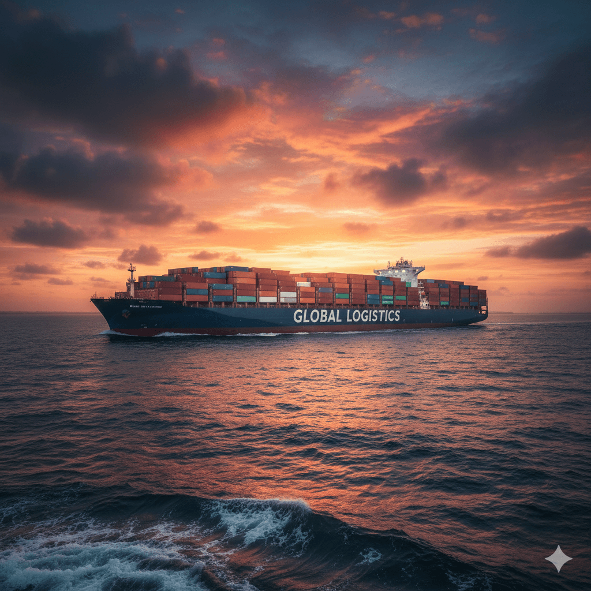
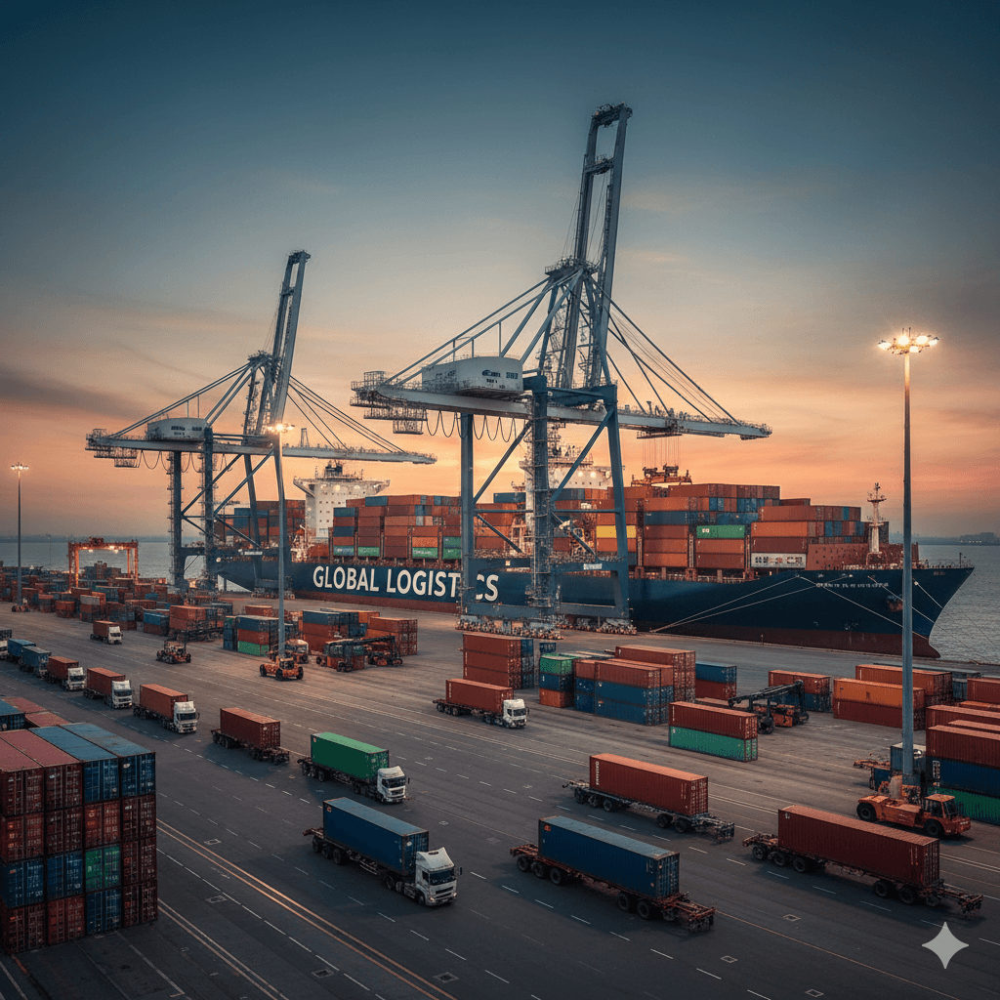

Photo placeholder
Add file: port-gallery-01.jpgPort-to-Port Detail Page
Connected planning from port arrival to inland movement and final delivery stages.
This page is useful for telling a more complete logistics story. Instead of showing only one service leg, it presents HHT as a partner that can coordinate broader freight movement around port activity.

Best Fit
Useful when multiple freight steps need one connected plan.
- Import cargo moving from port into inland distribution
- Freight flows that need drayage plus onward transport
- Users who want a more complete logistics partner story

Photo placeholder
Add file: port-gallery-02.jpgPort arrival planning
Shipment entry point and onward route needs are identified first.
Transition support
Port handoff and short-haul movements are aligned with inland planning.
Inland routing
Freight continues onward through the most suitable service path.
Delivery visibility
The customer sees a more connected shipment journey from one page.